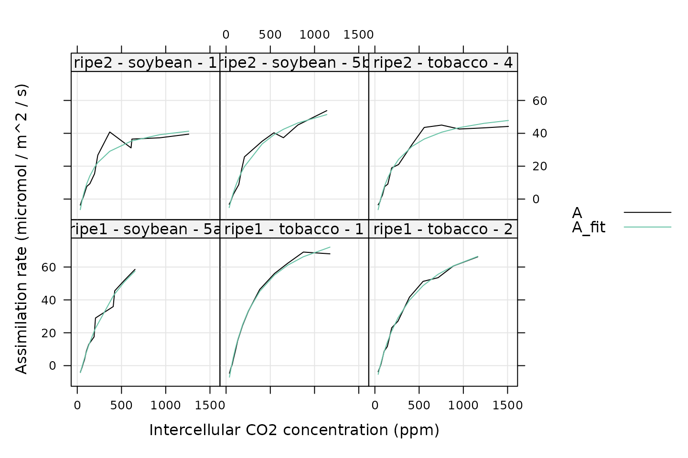

Creating Your Own Processing Tools
Source:vignettes/creating_your_own_processing_tools.Rmd
creating_your_own_processing_tools.RmdOverview
The PhotoGEA package contains many functions for
processing gas exchange data, such as apply_gm and
fit_c3_aci. (A complete list is available in the Developing a Data
Analysis Pipeline vignette.) However, you may wish to perform some
kind of processing that is not already available from
PhotoGEA. In this case, it is possible to create your own
processing tools that will be compatible with the other functions in
PhotoGEA that help with loading data, validating data,
processing sets of multiple reponse curves, and analyzing the
results.
In this vignette, we will provide an example showing some of the best
practices for creating your own processing tools. If you create a tool
that may be useful to others and you would like to share it, contact the
PhotoGEA package maintainer about adding your function to
the package.
Loading Packages
As always, the first step is to load the packages we will be using.
In addition to PhotoGEA, we will also use the
lattice package.
If the lattice package is not installed on your R setup,
you can install it by typing
install.packages('lattice').
Loading and Validating Data
For this example, we will load the same set of C3 A-Ci curves that are used in the Analyzing C3 A-Ci Curves vignette, and we will perform the same steps for organizing and cleaning the data. See that vignette for more details about these steps. For brevity, the commands are not included here, but they can be found at the end of this vignette in Commands From This Document.
Choosing a Model To Use
For this example, we will develop a function that fits a rectangular
hyperbola to an A-Ci curve. A rectangular hyperbola is an equation of
the form f(x) = y_max * x / (x + x_half). We can understand
a great deal about this type of equation by examining its form:
- When
xis very large,x + x_halfcan be approximated asx, so in this case, the function reduces toy_max * x / x = y_max. In other words, the function reaches a constant value ofy_maxwhenxis large. - When
xisx_half, the function’s value isy_max * x_half / (x_half + x_half) = y_max / 2. In other words,x_halfis the value ofxwhere the function reaches half of its maximum value. - When
xis small,x + x_halfcan be approximated byx_half. In this case, the function reduces toy_max * x / x_half. In other words, the function is a straight line with slopey_max / x_halfwhenxis small. - When
xis exactly zero, the function is also zero.
With this in mind, we can see that a rectangular hyperbola begins
with a linear portion and flattens out to a constant value. This is
generally similar to the shape of an A-Ci curve, so it might be
reasonable to use this equation for fitting. This type of model would be
characterized as an “empirical” model (in contrast to a mechanistic or
process-based model) because there is no underlying explanation for why
this equation should be a good fit. Thus, it could be considered to be a
simpler alternative to the Farquhar-von-Caemmerer-Berry model used in
the fit_c3_aci function.
When applying this to an A-Ci curve, we will want to replace the
independent variable x with Ci and the
calculated value with the net assimilation A. One caveat is
that A is generally negative when Ci is zero
or very low, but the rectangular hyperbola never returns negative
values. To get a better fit, it will be helpful to include respiration
as a constant value subtracted from the hyperbola:
A = A_max * Ci / (Ci + Ci_half) - Rd.
General Suggestions for PhotoGEA Fitting Functions
When creating a PhotoGEA fitting function, it is a good
idea to follow these rules, which will ensure that the function is
compatible with by + consolidate and has similar inputs and
outputs to other fitting functions:
- The first input argument should be an
exdfobject that represents one “unit” of data; in this case, a single A-Ci curve. This argument is often calledreplicate_exdfas a reminder of what it represents and what type of object it should be. - The first argument should be checked to make sure it is an
exdf; this can be done usingis.exdf. - The name of each important column from the
exdfobject should be passed as an input argument with a default value. - The function should check to make sure each important column is in
the
exdfobject and that it has the expected units; this check can be accomplished with thecheck_required_variablesfunction fromPhotoGEA. - The function should return a list of named
exdfobjects as its outputs; most fitting functions returnexdfobjects calledfitsandparameters. - The
fitsreturn object should be a copy of the original data with additional columns for the fitted values and the fit residuals. - The
parametersreturn object should have one row, and three different types of columns:- Some of its columns should include identifying information about the
curve such as
speciesorevent; this information can be obtained with theidentifier_columnsfunction fromPhotoGEA. - Some of its columns should include statistics that describe the
quality of the fit, such as the root mean squared error; this
information can be obtained with the
residual_statsfunction fromPhotoGEA. - The other columns should include the best-fit values of the model’s parameters and any other information that may be important to the user.
- Some of its columns should include identifying information about the
curve such as
- Any
exdfobjects returned by the function should be fully documented with units for each relevant column. - The category for each
exdfcolumn created by the function should be set to its name to provide a record of how the column was calculated. - Any problems detected while checking the inputs should cause errors.
- If a fit fails, the function should return
NAresults rather than causing an error. Otherwise, this will cause problems while fitting many curves at once, since the process will be disrupted by any errors that are thrown. - In general, the structure of the output (e.g. the number of
exdfobjects in the list, the names of theexdfobjects in the list, and the columns in eachexdfobject) should always be the same, no matter what the function’s inputs are and no matter what the fitting results are. Any outputs that are not relevant for a particular fit should just be set toNA. - Provide default values for as many input arguments as possible. (No
default should be provided for
replicate_exdf, of course.)
In the next section, we will create a fitting function that meets these criteria.
Writing A Fitting Function
Here we write a function that fits a rectangular hyperbola to an A-Ci curve and follows the suggestions outlined above:
# Define a custom fitting function
fit_hyperbola <- function(
replicate_exdf,
a_column_name = 'A',
ci_column_name = 'Ci',
initial_guess = list(A_max = 40, Ci_half = 100, Rd = 1)
)
{
### Check inputs
if (!is.exdf(replicate_exdf)) {
stop("fit_hyperbola requires an exdf object")
}
# Make sure the required variables are defined and have the correct units
required_variables <- list()
required_variables[[a_column_name]] <- "micromol m^(-2) s^(-1)"
required_variables[[ci_column_name]] <- "micromol mol^(-1)"
check_required_variables(replicate_exdf, required_variables)
# Extract the values of several important columns
A <- replicate_exdf[, a_column_name]
Ci <- replicate_exdf[, ci_column_name]
### Perform processing operations
# Wrap `stats::nls` in a `tryCatch` block so we can indicate fit failures by
# setting `aci_fit` to `NULL`.
aci_fit <- tryCatch(
{
stats::nls(A ~ A_max * Ci / (Ci + Ci_half) - Rd, start = initial_guess)
},
error = function(cond) {
print('Having trouble fitting an A-Ci curve:')
print(identifier_columns(replicate_exdf))
print('Giving up on the fit :(')
print(cond)
return(NULL)
},
warning = function(cond) {
print('Having trouble fitting an A-Ci curve:')
print(identifier_columns(replicate_exdf))
print('Giving up on the fit :(')
print(cond)
return(NULL)
}
)
### Collect and document outputs
# Extract the fit results and add the fits and residuals to the exdf object
if (is.null(aci_fit)) {
A_max <- NA
A_max_err <- NA
Ci_half <- NA
Ci_half_err <- NA
Rd <- NA
Rd_err <- NA
replicate_exdf[, paste0(a_column_name, '_fit')] <- NA
replicate_exdf[, paste0(a_column_name, '_residuals')] <- NA
} else {
fit_summary <- summary(aci_fit)
A_max <- fit_summary$coefficients[1,1]
A_max_err <- fit_summary$coefficients[1,2]
Ci_half <- fit_summary$coefficients[2,1]
Ci_half_err <- fit_summary$coefficients[2,2]
Rd <- fit_summary$coefficients[3,1]
Rd_err <- fit_summary$coefficients[3,2]
replicate_exdf[, paste0(a_column_name, '_fit')] <-
A_max * Ci / (Ci + Ci_half) - Rd
replicate_exdf[, paste0(a_column_name, '_residuals')] <-
fit_summary$residuals
}
# Document the columns that were added to the replicate exdf
replicate_exdf <- document_variables(
replicate_exdf,
c('fit_hyperbola', paste0(a_column_name, '_fit'), 'micromol m^(-2) s^(-1)'),
c('fit_hyperbola', paste0(a_column_name, '_residuals'), 'micromol m^(-2) s^(-1)')
)
# Get the replicate identifier columns
replicate_identifiers <- identifier_columns(replicate_exdf)
# Attach the residual stats to the identifiers
replicate_identifiers <- cbind(
replicate_identifiers,
residual_stats(
replicate_exdf[, paste0(a_column_name, '_residuals')],
replicate_exdf$units[[a_column_name]],
3
)
)
# Add the values of the fitted parameters
replicate_identifiers[, 'A_max'] <- A_max
replicate_identifiers[, 'A_max_err'] <- A_max_err
replicate_identifiers[, 'Ci_half'] <- Ci_half
replicate_identifiers[, 'Ci_half_err'] <- Ci_half_err
replicate_identifiers[, 'Rd'] <- Rd
replicate_identifiers[, 'Rd_err'] <- Rd_err
# Document the columns that were added
replicate_identifiers <- document_variables(
replicate_identifiers,
c('fit_hyperbola', 'A_max', 'micromol m^(-2) s^(-1)'),
c('fit_hyperbola', 'A_max_err', 'micromol m^(-2) s^(-1)'),
c('fit_hyperbola', 'Ci_half', 'micromol mol^(-1)'),
c('fit_hyperbola', 'Ci_half_err', 'micromol mol^(-1)'),
c('fit_hyperbola', 'Rd', 'micromol m^(-2) s^(-1)'),
c('fit_hyperbola', 'Rd_err', 'micromol m^(-2) s^(-1)')
)
return(list(
fits = replicate_exdf,
parameters = replicate_identifiers
))
}Here we have split the code into three main sections corresponding to the main steps that should be taken in any processing function:
-
Check inputs: Here we check the type of
replicate_exdfand the units of any columns that will be accessed during the subsequent processing. - Perform processing operations: Here we actually perform the fit and get the results in their default form.
-
Collect and document outputs: Here we reorganize the fit
results into two
exdfobjects corresponding to the fits and parameters, and make sure that all units are documented. This section ends by returning the results as a list of namedexdfobjects.
To make the fit, we have chosen to use nls, a function
from base R that performs nonlinear least-squares fitting. This function
is fairly straightforward to use, and it is quite popular. It requires
an initial guess for the values of the model’s parameters, so an
initial_guess input argument was included in
fit_hyperbola allowing the user to specify the starting
guess. One issue with nls is that it will throw an error if
the fit is not successful. Dealing with these possible errors
necessitates some extra code. First, we wrap the call to
nls in tryCatch, and then later we have to
decide what to return when there is a fit failure; here we just return
NA for all the variables normally determined from the
fitting procedure.
One improvement that could be made is to provide a way to generate a better initial guess for the starting parameter values, but we have left it out for brevity.
Using the Fitting Function
Now we can use the new fitting just as we would use any other
processing function from PhotoGEA. Here we will use it to
fit all the response curves in the example data set, and then examine
the results by plotting the fits, plotting the residuals, and viewing
the parameter values. These commands are nearly identical to ones from
the Analyzing C3 A-Ci Curves
vignette.
# Fit each curve
c3_aci_results <- consolidate(by(
licor_data, # The `exdf` object containing the curves
licor_data[, 'curve_identifier'], # A factor used to split `licor_data` into chunks
fit_hyperbola # The function to apply to each chunk of `licor_data`
))
# Plot each fit
xyplot(
A + A_fit ~ Ci | curve_identifier,
data = c3_aci_results$fits$main_data,
type = 'l',
auto.key = list(space = 'right'),
grid = TRUE,
xlab = 'Intercellular CO2 concentration (ppm)',
ylab = 'Assimilation rate (micromol / m^2 / s)',
par.settings = list(
superpose.line = list(col = multi_curve_colors()),
superpose.symbol = list(col = multi_curve_colors())
)
)
# Plot the residuals
xyplot(
A_residuals ~ Ci | curve_identifier,
data = c3_aci_results$fits$main_data,
type = 'b',
pch = 16,
grid = TRUE,
xlab = paste0('Intercellular CO2 concentration (',
c3_aci_results$fits$units$Ci, ')'),
ylab = paste0('Assimilation rate residual (measured - fitted)\n(',
c3_aci_results$fits$units$A_residuals, ')')
)
# View the parameter values
columns_for_viewing <-
c('instrument', 'species', 'plot', 'A_max', 'Ci_half', 'Rd', 'RMSE')
c3_aci_parameters <-
c3_aci_results$parameters[ , columns_for_viewing, TRUE]
print(c3_aci_parameters)
#> instrument [UserDefCon] (NA) species [UserDefCon] (NA) plot [UserDefCon] (NA)
#> 1 ripe1 soybean 5a
#> 2 ripe1 tobacco 1
#> 3 ripe1 tobacco 2
#> 4 ripe2 soybean 1
#> 5 ripe2 soybean 5b
#> 6 ripe2 tobacco 4
#> A_max [fit_hyperbola] (micromol m^(-2) s^(-1))
#> 1 128.99658
#> 2 115.27665
#> 3 108.00753
#> 4 67.50371
#> 5 82.51852
#> 6 74.40789
#> Ci_half [fit_hyperbola] (micromol mol^(-1))
#> 1 560.2505
#> 2 286.3507
#> 3 380.7208
#> 4 146.5151
#> 5 303.7394
#> 6 211.0452
#> Rd [fit_hyperbola] (micromol m^(-2) s^(-1))
#> 1 11.89748
#> 2 20.57574
#> 3 14.89457
#> 4 19.17675
#> 5 13.73897
#> 6 17.46451
#> RMSE [residual_stats] (micromol m^(-2) s^(-1))
#> 1 2.857247
#> 2 1.753694
#> 3 1.578398
#> 4 4.260341
#> 5 2.815101
#> 6 3.040083More Examples
Another example can be found in the Combining PhotoGEA With Other Packages vignette, which discusses how to write wrappers for functions from other packages. Essentially, this is a specialized case of the ideas discussed here in this vignette.
Additional examples can be found by accessing the source code for the
built-in processing functions provided with PhotoGEA. One
way to see the code is to simply type the name of a function in the R
terminal; for example, fit_ball_berry. Although this method
is convenient, the downside is that any comments in the original code
will not be included. An alternate way is to view the code on GitHub,
where all the comments will be retained. For example, the source code
for fit_ball_berry can be found by accessing the PhotoGEA GitHub page
and navigating to R/fit_ball_berry.R.
Commands From This Document
The following code chunk includes all the central commands used throughout this document. They are compiled here to make them easy to copy/paste into a text file to initialize your own script.
# Load required packages
library(PhotoGEA)
library(lattice)
# Define a vector of paths to the files we wish to load
file_paths <- c(
system.file('extdata', 'c3_aci_1.xlsx', package = 'PhotoGEA', mustWork = TRUE),
system.file('extdata', 'c3_aci_2.xlsx', package = 'PhotoGEA', mustWork = TRUE)
)
# Load each file, storing the result in a list
licor_exdf_list <- lapply(file_paths, function(fpath) {
read_gasex_file(fpath, 'time')
})
# Get the names of all columns that are present in all of the Licor files
columns_to_keep <- do.call(identify_common_columns, licor_exdf_list)
# Extract just these columns
licor_exdf_list <- lapply(licor_exdf_list, function(x) {
x[ , columns_to_keep, TRUE]
})
# Use `rbind` to combine all the data
licor_data <- do.call(rbind, licor_exdf_list)
# Create a new identifier column formatted like `instrument - species - plot`
licor_data[ , 'curve_identifier'] <-
paste(licor_data[ , 'instrument'], '-', licor_data[ , 'species'], '-', licor_data[ , 'plot'])
# Make sure the data meets basic requirements
check_licor_data(licor_data, 'curve_identifier', 16, 'CO2_r_sp')
# Remove points with duplicated `CO2_r_sp` values and order by `Ci`
licor_data <- organize_response_curve_data(
licor_data,
'curve_identifier',
c(9, 10),
'Ci'
)
# Only keep points where stability was achieved
licor_data <- licor_data[licor_data[, 'Stable'] == 2, , TRUE]
# Remove any curves that have fewer than three remaining points
npts <- by(licor_data, licor_data[, 'curve_identifier'], nrow)
ids_to_keep <- names(npts[npts > 2])
licor_data <- licor_data[licor_data[, 'curve_identifier'] %in% ids_to_keep, , TRUE]
# Remove points where `instrument` is `ripe1` and `CO2_r_sp` is 1800
licor_data <- remove_points(
licor_data,
list(instrument = 'ripe1', CO2_r_sp = 1800)
)
# Define a custom fitting function
fit_hyperbola <- function(
replicate_exdf,
a_column_name = 'A',
ci_column_name = 'Ci',
initial_guess = list(A_max = 40, Ci_half = 100, Rd = 1)
)
{
### Check inputs
if (!is.exdf(replicate_exdf)) {
stop("fit_hyperbola requires an exdf object")
}
# Make sure the required variables are defined and have the correct units
required_variables <- list()
required_variables[[a_column_name]] <- "micromol m^(-2) s^(-1)"
required_variables[[ci_column_name]] <- "micromol mol^(-1)"
check_required_variables(replicate_exdf, required_variables)
# Extract the values of several important columns
A <- replicate_exdf[, a_column_name]
Ci <- replicate_exdf[, ci_column_name]
### Perform processing operations
# Wrap `stats::nls` in a `tryCatch` block so we can indicate fit failures by
# setting `aci_fit` to `NULL`.
aci_fit <- tryCatch(
{
stats::nls(A ~ A_max * Ci / (Ci + Ci_half) - Rd, start = initial_guess)
},
error = function(cond) {
print('Having trouble fitting an A-Ci curve:')
print(identifier_columns(replicate_exdf))
print('Giving up on the fit :(')
print(cond)
return(NULL)
},
warning = function(cond) {
print('Having trouble fitting an A-Ci curve:')
print(identifier_columns(replicate_exdf))
print('Giving up on the fit :(')
print(cond)
return(NULL)
}
)
### Collect and document outputs
# Extract the fit results and add the fits and residuals to the exdf object
if (is.null(aci_fit)) {
A_max <- NA
A_max_err <- NA
Ci_half <- NA
Ci_half_err <- NA
Rd <- NA
Rd_err <- NA
replicate_exdf[, paste0(a_column_name, '_fit')] <- NA
replicate_exdf[, paste0(a_column_name, '_residuals')] <- NA
} else {
fit_summary <- summary(aci_fit)
A_max <- fit_summary$coefficients[1,1]
A_max_err <- fit_summary$coefficients[1,2]
Ci_half <- fit_summary$coefficients[2,1]
Ci_half_err <- fit_summary$coefficients[2,2]
Rd <- fit_summary$coefficients[3,1]
Rd_err <- fit_summary$coefficients[3,2]
replicate_exdf[, paste0(a_column_name, '_fit')] <-
A_max * Ci / (Ci + Ci_half) - Rd
replicate_exdf[, paste0(a_column_name, '_residuals')] <-
fit_summary$residuals
}
# Document the columns that were added to the replicate exdf
replicate_exdf <- document_variables(
replicate_exdf,
c('fit_hyperbola', paste0(a_column_name, '_fit'), 'micromol m^(-2) s^(-1)'),
c('fit_hyperbola', paste0(a_column_name, '_residuals'), 'micromol m^(-2) s^(-1)')
)
# Get the replicate identifier columns
replicate_identifiers <- identifier_columns(replicate_exdf)
# Attach the residual stats to the identifiers
replicate_identifiers <- cbind(
replicate_identifiers,
residual_stats(
replicate_exdf[, paste0(a_column_name, '_residuals')],
replicate_exdf$units[[a_column_name]],
3
)
)
# Add the values of the fitted parameters
replicate_identifiers[, 'A_max'] <- A_max
replicate_identifiers[, 'A_max_err'] <- A_max_err
replicate_identifiers[, 'Ci_half'] <- Ci_half
replicate_identifiers[, 'Ci_half_err'] <- Ci_half_err
replicate_identifiers[, 'Rd'] <- Rd
replicate_identifiers[, 'Rd_err'] <- Rd_err
# Document the columns that were added
replicate_identifiers <- document_variables(
replicate_identifiers,
c('fit_hyperbola', 'A_max', 'micromol m^(-2) s^(-1)'),
c('fit_hyperbola', 'A_max_err', 'micromol m^(-2) s^(-1)'),
c('fit_hyperbola', 'Ci_half', 'micromol mol^(-1)'),
c('fit_hyperbola', 'Ci_half_err', 'micromol mol^(-1)'),
c('fit_hyperbola', 'Rd', 'micromol m^(-2) s^(-1)'),
c('fit_hyperbola', 'Rd_err', 'micromol m^(-2) s^(-1)')
)
return(list(
fits = replicate_exdf,
parameters = replicate_identifiers
))
}
# Fit each curve
c3_aci_results <- consolidate(by(
licor_data, # The `exdf` object containing the curves
licor_data[, 'curve_identifier'], # A factor used to split `licor_data` into chunks
fit_hyperbola # The function to apply to each chunk of `licor_data`
))
# Plot each fit
xyplot(
A + A_fit ~ Ci | curve_identifier,
data = c3_aci_results$fits$main_data,
type = 'l',
auto.key = list(space = 'right'),
grid = TRUE,
xlab = 'Intercellular CO2 concentration (ppm)',
ylab = 'Assimilation rate (micromol / m^2 / s)',
par.settings = list(
superpose.line = list(col = multi_curve_colors()),
superpose.symbol = list(col = multi_curve_colors())
)
)
# Plot the residuals
xyplot(
A_residuals ~ Ci | curve_identifier,
data = c3_aci_results$fits$main_data,
type = 'b',
pch = 16,
grid = TRUE,
xlab = paste0('Intercellular CO2 concentration (',
c3_aci_results$fits$units$Ci, ')'),
ylab = paste0('Assimilation rate residual (measured - fitted)\n(',
c3_aci_results$fits$units$A_residuals, ')')
)
# View the parameter values
columns_for_viewing <-
c('instrument', 'species', 'plot', 'A_max', 'Ci_half', 'Rd', 'RMSE')
c3_aci_parameters <-
c3_aci_results$parameters[ , columns_for_viewing, TRUE]
print(c3_aci_parameters)